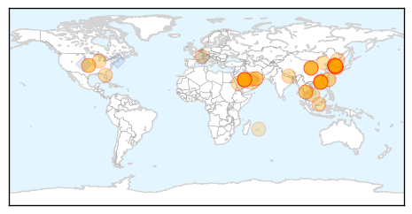
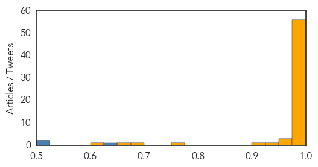
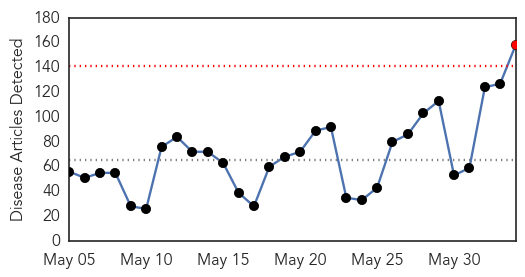
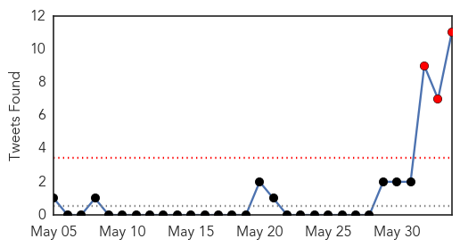

MERS
30-Day Web Trend
13 alerts, 2 warnings

30-Day Twitter Trend
9 alerts, 0 warnings

Article Locations
Article Confidences
Top Articles:
- 1.000
- South Korea shuts down primary schools as spread of MERS alarms public
- 1.000
- First deaths from Mers virus in South Korea
- 1.000
- Public Health Ministry affirms Thailand free of 2012 Corona virus patient
- 1.000
- Schools Close in Korea Amid MERS Outbreak
- 1.000
- Japan beefs up measures in bid to pre-empt arrival of deadly MERS virus
- 1.000
- Mers virus: South Korea closes hundreds of schools over fears deadly virus may spread
- 1.000
- This Is What We Know About The MERS Virus So Far
- 1.000
- Five more South Korean MERS cases lift total to 35
- 1.000
- South Korean MERS outbreak likely to spread, health officials say
- 1.000
- Science, Technology and Medicine News Updates From Asia
- 1.000
- MERS virus forces South Korean schools to close as panic spreads
- 1.000
- Vietnam health ministry urges more efforts to block MERS-CoV spread
- 1.000
- South Korean schools close to prevent spread of MERS virus, 1364 people in quarantine
- 1.000
- Public Health monitoring MERS outbreak in South Korea
- 1.000
- MERS virus threat: NIV to enhance lab capabilities
- 1.000
- People's Daily Online
- 0.999
- Two South Koreans Die Of MERS Virus
- 0.999
- South Korea president Park Geun-Hye urges calm as Mers outbreak closes schools
- 0.999
- South Korea shuts down over 200 schools as Mers infections rise in wake of two deaths
- 0.999
- South Korean MERS Outbreak
- 0.999
- The Lancet: Middle East respiratory syndrome (MERS) Seminar
- 0.999
- As Korean MERS cases grow, experts analyze patterns
- 0.999
- MERS virus kills 2 in S.Korea; infections rise to 25
- 0.999
- South Korea reports its first 2 deaths from MERS virus
- 0.999
- South Korea's MERS Outbreak Likely to Spread Says WHO
- 0.998
- Middle East respiratory syndrome coronavirus (MERS-CoV) in the Republic of Korea
- 0.998
- Transparency, teamwork key to beating deadly S.Korea MERS outbreak
- 0.998
- UPDATE 3-South Korea says everything must be done to halt MERS
- 0.998
- MERS fears escalate, five more cases reported
- 0.998
- South Korea says everything must be done to halt MERS
- 0.998
- South Korea's MERS outbreak
- 0.998
- South Korea says everything must be done to halt MERS
- 0.997
- MERS cases in South Korea ...｜Society｜WCT
- 0.997
- South Korea reports 5 more cases of MERS illness
- 0.997
- No need for mandatory Mers quarantine, WHO says, amid Hong Kong public health scare
- 0.997
- MERS: What is it, what are the symptoms and how do you catch it?
- 0.997
- Transparency, teamwork key to beating deadly South Korea MERS outbreak
- 0.996
- Singapore has measures in place in case Mers-CoV virus occurs here, says Ministry of Health, Health News & Top Stories
- 0.996
- Over 200 schools cancel classes
- 0.996
- South Korea Has First Two Mers Deaths
- 0.996
- Britannica.com
- 0.996
- South Korea Mers cases hit 30
- 0.995
- South Korea says everything must be done to halt MERS, Others news, Health News, AsiaOne YourHealth
- 0.995
- South Korea has first 2 MERS deaths
- 0.995
- In spread of MERS, a mutation is most feared-INSIDE Korea JoongAng Daily
- 0.994
- CDC doctor urges calm over MERS scare
- 0.993
- 200+ South Korean schools suspend classes over MERS outbreak
- 0.993
- 200 South Korean schools suspend classes over MERS outbreak
- 0.992
- 200 South Korean schools suspend classes over MERS outbreak
- 0.990
- Health authorities in China ...｜Society｜WCT
Showing top 50 articles...
Top Tweets:
- 0.648
- Middle East respiratory syndrome MERS is a viral respiratory disease caused by a novel coronavirus http://t.co/IB8ufMGw5J
- 0.521
- RT: South Korea announces 5 more coronavirus MERS cases incl. 2 more health care workers -total now 35 -June 3 2015 https…
- 0.521
- RT: South Korea announces 5 more coronavirus MERS cases incl. 2 more health care workers -total now 35 -June 3 2015 https…
Unknown
30-Day Web Trend
1 alerts, 0 warnings

30-Day Twitter Trend
3 alerts, 0 warnings

Article Locations


Article Confidences

Top Articles:
- 1.000
- Fears of MERS Virus Prompt Broadening of Cautions in South Korea
- 1.000
- Guam on watch for deadly disease
- 1.000
- The World On Arirang
- 1.000
- South Korea grapples to contain MERS
- 1.000
- MERS Kills Two in South Korea
- 1.000
- South Korea grapples to contain MERS as 1,369 in quarantine
- 1.000
- South Korea grapples to contain MERS as 1,364 in quarantine
- 1.000
- More than 1,300 in Quarantine as South Korea Battles MERS Virus
- 0.999
- Schools close as MERS virus spreads in South Korea
- 0.999
- South Korea quarantines more than 1,300 in race against MERS
- 0.999
- Schools close as MERS virus spreads in S Korea
- 0.999
- Korea president urges action as MERS outbreak closes schools
- 0.999
- South Korea president urges action as MERS outbreak closes schools
- 0.999
- South Korea president urges action as Mers outbreak closes schools, East Asia News & Top Stories
- 0.999
- South Korea races to contain MERS virus outbreak, with two dead and 1600 quarantined
- 0.999
- Schools close as MERS virus spreads in S Korea
- 0.999
- S. Korea president urges action as MERS outbreak closes schools
- 0.999
- S. Korea president urges action as MERS outbreak closes schools
- 0.999
- Schools close as MERS virus spreads in S. Korea
- 0.999
- South Korea Confirms 5 More Cases, Outbreak is Likely to Spread
- 0.999
- Doctors urged to be on lookout due to MERS in S. Korea
- 0.999
- MERS Claims Five New Victims, 1,364 Quarantined; Why Is The Virus Spreading In South Korea?
- 0.999
- Park urges action as MERS outbreak closes schools
- 0.999
- Schools close as MERS virus spreads in S Korea
- 0.999
- MERS forces closure of South Korea schools
- 0.999
- MERS-infected S.Koreans rise to 30, tertiary infection added - Xinhua
- 0.998
- SKorea shuts 200 schools amid Mers
- 0.998
- SOUTH KOREA REPORTS FIVE MORE CASES OF MERS ILLNESS
- 0.998
- Face masks and hand sanitizers have become essentials to South Korean’s daily life to fight MERS
- 0.998
- S. Korea response to MERS outbreak deemed ′insufficient′ as cases increase
- 0.998
- South Korea reports five more cases of Mers
- 0.997
- MERS Outbreak Stirs Concern but Not Panic in South Korea
- 0.997
- Authorities Say MERS Virus Outbreak Will Continue To Spread
- 0.997
- Classes Canceled, 1,300 Quarantined In S. Korea's Scramble To Stop MERS
- 0.997
- Park to convene emergency meeting over MERS
- 0.997
- South Korea confirms five new MERS virus cases
- 0.997
- South Korea shuts 200 schools to contain Mers
- 0.997
- (3rd LD) South Korea creates task force to cope with MERS
- 0.996
- Middle Eastern Respiratory Syndrome
- 0.996
- Classes Canceled, 1,300 Quarantined In S. Korea's Scramble To Stop MERS
- 0.996
- Hundreds of Chinese cancel ...｜Society｜WCT
- 0.996
- South Korea Hit by Biggest MERS Outbreak Beyond Middle East
- 0.996
- 5 New Cases Reported As Over 230 Schools Cancel Classes, MERS Task Force Set Up
- 0.996
- 500 schools shut and tourists scared off by deadly disease
- 0.996
- MERS-infected S. Koreans rise to 30, tertiary infection added
- 0.996
- Chinese Tourists Cancel Travel Plans to South Korea, MERS Cases Identified Rises to 30
- 0.996
- Hong Kong not taking chances against MERS
- 0.996
- (2nd LD) South Korea creates task force to cope with MERS
- 0.996
- The Chosun Ilbo (English Edition): Daily News from Korea
- 0.996
- MERS-Infected S.Koreans Rise to 30, Tertiary Infection Added
Showing top 50 articles...
Top Tweets:
- 0.778
- MERS by numbers: 1179 cases at least 442 deaths. Ages: 9 months to 99 yrs. 25 country have reported cases but >85% have been in KSA: @WHO
- 0.736
- .@MeyerBjoern There have been many MERS hospital outbreaks. In fact the majority of cases are probably from hospital spread.
- 0.688
- The ongoing outbreak in Rep of Korea is the largest MERS outbreak in health-care settings that has occurred outside of the Middle East
- 0.661
- As of 3 Jun 2015 1179 lab-confirmed Middle East resp syndrome cases hv been reported to WHO since Apr 2012 incl at least 442 deaths MERS
- 0.646
- WHO expects more MERS cases may be reported from Rep of Korea among ppl in contact w/ initial cases (before precautions were implemented)
- 0.629
- RT: WHO expects more MERS cases may be reported from Rep of Korea among ppl in contact w/ initial cases (before precautions were imp…
- 0.614
- In the ongoing MERS outbreak in Rep of Korea all known transmissions hv occurred before adequate infection prevention & control procedures
- 0.599
- RT: In the ongoing MERS outbreak in Rep of Korea all known transmissions hv occurred before adequate infection prevention & control …
- 0.595
- All cases to date in SKorea's MERS outbreak caught virus before needed infection control measures were set up: @WHO http://t.co/EGzXbgvN5R
- 0.588
- RT: MERS outbreak in Korea now up to 30 cases. 4 of the 5 new cases again from those three days in the second hospital. What happe…
- 0.534
- RT: Due to growing fears of MERS disease S.Korean education ministry said 209 schools are now temporary closed. Korea